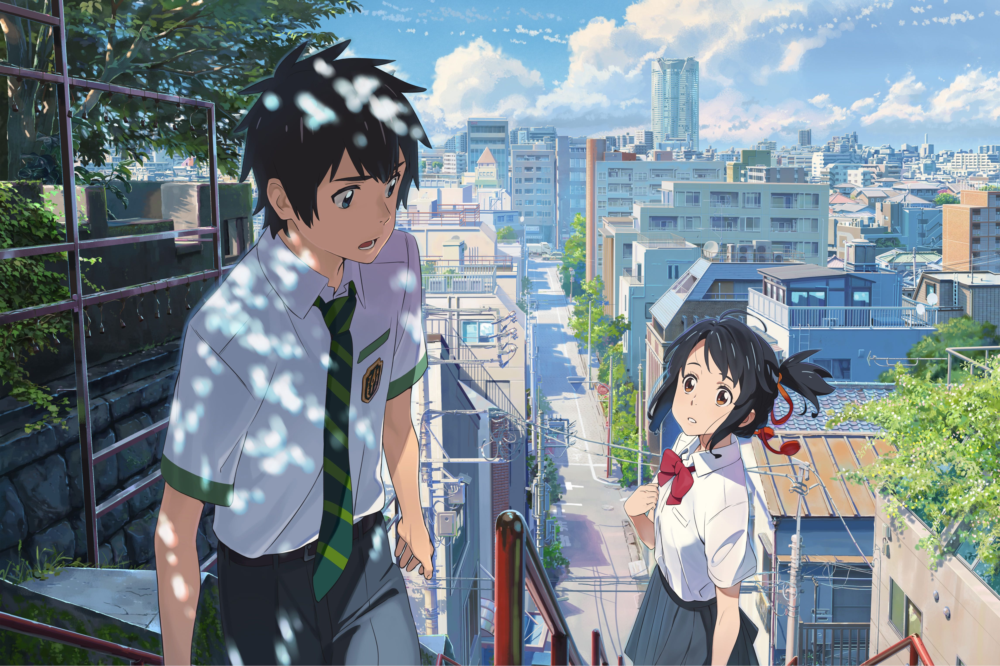

| 立花瀧 | 本作男主角。2016年時17歲 生活在東京市中心的東京都立神宮高等學校2年級生[9]。放學後在義大利餐館打工，與同事同樣對店內前輩奧寺暗懷好感。私下擅長素描，對建築和美術有興趣。性格衝動，跟三葉交換身體的那段期間曾多次替她打抱不平 在大學畢業後正在尋找與建築業相關的工作，在改變了三葉命運的五年後與三葉重逢。 |
| 宮水三葉 | 本作女主角。2013年時17歲、實際比瀧大3歲，住在深山鄉間小鎮糸守町的岐阜縣立糸守高等學校2年級生,跟還是小學生的妹妹一起在家族世代經營的「宮水神社」擔任巫女，與祖母共同生活.後來在睡夢中不經意地與（2016年，三年後的）立花瀧交換身體，體驗了一番東京大都市生活。在交換期間與瀧互相了解，最終喜歡上了瀧。 |
| 奧寺美紀 | 打扮漂亮的女大學生，瀧的打工餐廳前輩，是包括瀧在內的男性員工們的憧憬對象。發覺瀧的改變，因此曾經對瀧抱持好感。但後來也察覺到瀧開始在意的不是自己。有吸菸的習慣。 2021年在大型服飾連鎖千葉分店上班，出差順便找瀧敘舊，已婚並秀出戒指、期許彼此都能夠幸福 |
我喜愛這部片的原因
- 音樂非常的好聽
- 裡頭的構圖很唯美,細膩
- 劇情動人,扣人心弦
- 目前唯一除吉卜力工作室作品以外超越百億日圓票房的日本動畫電影
- 西班牙錫切斯影展最佳動畫長片獎
- 最佳動畫長片
- 主題曲獎
片尾曲
This is a link當我壓力大時總會聽這首歌來紓壓,是一首療癒人心的歌~
台灣版主題曲的爭議
還記得之前五月天版本剛發行的時候,大家為此吵得沸沸揚揚
有人認為他的旋律太平淡了,歌詞也不夠好
原本在尚未看影片之前我也是如此覺得,但是看完之後再去聽那首歌根本餘韻無窮阿!
這是五月天的 好好
This is a link得獎事蹟
諸多..且破多項紀錄!

感想
你的名子算是一部愛情與推理電影
音樂、畫面到劇情都非常到位
音樂好聽，歌詞跟劇情非常搭得起來
畫面有幾幕真實到以為是現實風景
雖然有些地方是有時空交錯的問題,需要自己去推敲時間軸
但是我還是很愛這部片!
這部片也讓他的動畫作者 新海誠 大紅~
也讓劇中有話到的景點爆紅
重點看完之後都想讓人 談戀愛了有感受到純純的愛!
總結他是一部很值得看的電影!
Thanks for watching and hoping you like it!!